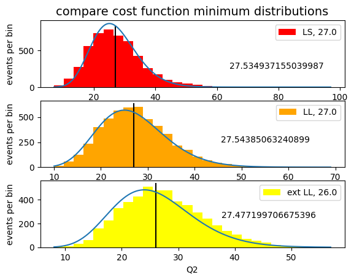

cost functions comparison: exercise 12.4#
Exercise 12.4#
Starting from samples of pseudo-random numbers generated
according to a Gaussian probability density function,
using the technique of the toy experiments
study the distribution of the minimum of the cost function
used by iminuit in Gaussian fits.
Does it match a \(\chi^2\) distribution for any number of events, for the cases of maximum likelihood, extended maximum likelihood, and least squares?
from matplotlib import pyplot as plt
import numpy as np
from myrand import generate_TCL_ms
from iminuit import Minuit
from scipy.stats import norm
from math import floor, ceil, sqrt
# for the binning choice
def sturges (N) :
return floor (1 + 3.322 * np.log (N))
# parameters valid for all tests
N_toys = 5000
sample_size = 500
bins = sturges (sample_size)
binned likelihood#
from iminuit.cost import BinnedNLL
def mod_signal_bin_LL (bin_edges, mu, sigma) :
''' fitting model for binned likelihood'''
return norm.cdf (bin_edges, mu, sigma)
means_bin_LL = []
sigmas_bin_LL = []
Q2_bin_LL = []
N_dof_LL = 0
for iToy in range (N_toys) :
subsample = generate_TCL_ms (1., 0.7, sample_size)
bin_content, bin_edges = np.histogram (subsample, bins,
range = (floor (min (subsample)), ceil (max (subsample))))
my_cost_func_bin_LL = BinnedNLL (bin_content, bin_edges, mod_signal_bin_LL)
my_minuit_bin_LL = Minuit (
my_cost_func_bin_LL,
mu = np.mean (subsample),
sigma = np.std (subsample),
)
my_minuit_bin_LL.limits['sigma'] = (0, None)
my_minuit_bin_LL.migrad ()
if not my_minuit_bin_LL.valid : continue
means_bin_LL.append (my_minuit_bin_LL.values['mu'])
sigmas_bin_LL.append (my_minuit_bin_LL.values['sigma'])
Q2_bin_LL.append (my_minuit_bin_LL.fval)
if (iToy == 0) : N_dof_LL = my_minuit_bin_LL.ndof
---------------------------------------------------------------------------
KeyboardInterrupt Traceback (most recent call last)
Cell In[2], line 24
18 my_minuit_bin_LL = Minuit (
19 my_cost_func_bin_LL,
20 mu = np.mean (subsample),
21 sigma = np.std (subsample),
22 )
23 my_minuit_bin_LL.limits['sigma'] = (0, None)
---> 24 my_minuit_bin_LL.migrad ()
25 if not my_minuit_bin_LL.valid : continue
26 means_bin_LL.append (my_minuit_bin_LL.values['mu'])
File /opt/hostedtoolcache/Python/3.8.18/x64/lib/python3.8/site-packages/iminuit/minuit.py:756, in Minuit.migrad(self, ncall, iterate)
754 if self._precision is not None:
755 migrad.precision = self._precision
--> 756 fm = migrad(ncall, self._tolerance)
757 if fm.is_valid or fm.has_reached_call_limit:
758 break
File /opt/hostedtoolcache/Python/3.8.18/x64/lib/python3.8/site-packages/iminuit/cost.py:600, in Cost.__call__(self, *args)
585 def __call__(self, *args: float) -> float:
586 """
587 Evaluate the cost function.
588
(...)
598 float
599 """
--> 600 r = self._call(args)
601 if self.verbose >= 1:
602 print(args, "->", r)
File /opt/hostedtoolcache/Python/3.8.18/x64/lib/python3.8/site-packages/iminuit/cost.py:1618, in BinnedNLL._call(self, args)
1617 def _call(self, args: Sequence[float]) -> float:
-> 1618 mu = self._pred(args)
1619 ma = self.mask
1620 if ma is not None:
File /opt/hostedtoolcache/Python/3.8.18/x64/lib/python3.8/site-packages/iminuit/cost.py:1610, in BinnedNLL._pred(self, args)
1609 def _pred(self, args: Sequence[float]) -> NDArray:
-> 1610 p = super()._pred(args)
1611 ma = self.mask
1612 if ma is not None:
File /opt/hostedtoolcache/Python/3.8.18/x64/lib/python3.8/site-packages/iminuit/cost.py:1252, in BinnedCostWithModel._pred(self, args)
1251 def _pred(self, args: Sequence[float]) -> NDArray:
-> 1252 d = self._model(self._model_xe, *args)
1253 d = _normalize_model_output(d)
1254 expected_shape = (np.prod(self._xe_shape),)
Cell In[2], line 5, in mod_signal_bin_LL(bin_edges, mu, sigma)
3 def mod_signal_bin_LL (bin_edges, mu, sigma) :
4 ''' fitting model for binned likelihood'''
----> 5 return norm.cdf (bin_edges, mu, sigma)
File /opt/hostedtoolcache/Python/3.8.18/x64/lib/python3.8/site-packages/scipy/stats/_distn_infrastructure.py:2178, in rv_continuous.cdf(self, x, *args, **kwds)
2176 x = np.asarray((x - loc)/scale, dtype=dtyp)
2177 cond0 = self._argcheck(*args) & (scale > 0)
-> 2178 cond1 = self._open_support_mask(x, *args) & (scale > 0)
2179 cond2 = (x >= np.asarray(_b)) & cond0
2180 cond = cond0 & cond1
KeyboardInterrupt:
extended binned likelihood#
from iminuit.cost import ExtendedBinnedNLL
def mod_signal_bin_ext_LL (bin_edges, N_signal, mu, sigma) :
''' fitting model for extended binned likelihood'''
return N_signal * norm.cdf (bin_edges, mu, sigma)
means_bin_ext_LL = []
sigmas_bin_ext_LL = []
Q2_bin_ext_LL = []
N_dof_ext_LL = 0
for iToy in range (N_toys) :
subsample = generate_TCL_ms (1., 0.7, sample_size)
bin_content, bin_edges = np.histogram (subsample, bins,
range = (floor (min (subsample)), ceil (max (subsample))))
my_cost_func_bin_ext_LL = ExtendedBinnedNLL (bin_content, bin_edges, mod_signal_bin_ext_LL)
my_minuit_bin_ext_LL = Minuit (
my_cost_func_bin_ext_LL,
N_signal = len (subsample),
mu = np.mean (subsample),
sigma = np.std (subsample),
)
my_minuit_bin_ext_LL.limits['N_signal', 'sigma'] = (0, None)
my_minuit_bin_ext_LL.migrad ()
if not my_minuit_bin_ext_LL.valid : continue
means_bin_ext_LL.append (my_minuit_bin_ext_LL.values['mu'])
sigmas_bin_ext_LL.append (my_minuit_bin_ext_LL.values['sigma'])
Q2_bin_ext_LL.append (my_minuit_bin_ext_LL.fval)
if (iToy == 0) : N_dof_ext_LL = my_minuit_bin_ext_LL.ndof
least squares#
from iminuit.cost import LeastSquares
def func_approx (x, N_events, mean, sigma, bin_width) :
return N_events * norm.pdf (x, mean, sigma) * bin_width
means_LS = []
sigmas_LS = []
Q2_bin_LS = []
N_dof_LS = 0
for iToy in range (N_toys) :
subsample = generate_TCL_ms (1., 0.7, sample_size)
bin_content, bin_edges = np.histogram (subsample, bins,
range = (floor (min (subsample)), ceil (max (subsample))))
bin_centres = 0.5 * (bin_edges[1:] + bin_edges[:-1])
sigma_y = [max (sqrt (num), 1.) for num in bin_content]
least_squares = LeastSquares (bin_centres, bin_content, sigma_y, func_approx)
my_minuit_LS = Minuit (least_squares,
N_events = sample_size,
mean = np.mean (subsample),
sigma = np.std (subsample),
bin_width = bin_centres[1] - bin_centres[0]
)
my_minuit_LS.fixed["bin_width", "N_events"] = True
my_minuit_LS.migrad ()
my_minuit_LS.hesse ()
if not my_minuit_LS.valid : continue
means_LS.append (my_minuit_LS.values['mean'])
sigmas_LS.append (my_minuit_LS.values['sigma'])
Q2_bin_LS.append (my_minuit_LS.fval)
if (iToy == 0) : N_dof_LS = my_minuit_LS.ndof
compare the five estimates#
from scipy.stats import chi2
def plot_histo (ax, sample, ndof, label, color) :
xMin = floor (min (sample))
xMax = ceil (max (sample))
N_bins = sturges (len (sample))
bin_edges = np.linspace (xMin, xMax, N_bins)
ax.set_xlabel ('Q2')
ax.set_ylabel ('events per bin')
ax.hist (sample,
bins = bin_edges,
color = color,
label = label + ', ' + str (ndof),
)
vertical_limits = ax.get_ylim ()
ax.plot ([ndof, ndof], vertical_limits, color = 'black')
ax.legend ()
x = np.arange (xMin, xMax, 0.001)
bin_width = (xMax - xMin) / N_bins
ax.plot (x, bin_width * len (sample) * chi2.pdf (x, df=ndof))
ax.text (0.66 * xMax, len (sample) / 20., str (sum (sample) / len (sample)))
fig, axes = plt.subplots (nrows = 3, ncols = 1)
axes[0].set_title ('compare cost function minimum distributions', size=14)
plot_histo (axes[0], Q2_bin_LS, N_dof_LS, 'LS', 'red')
plot_histo (axes[1], Q2_bin_LL, N_dof_LL, 'LL', 'orange')
plot_histo (axes[2], Q2_bin_ext_LL, N_dof_ext_LL, 'ext LL', 'yellow')
